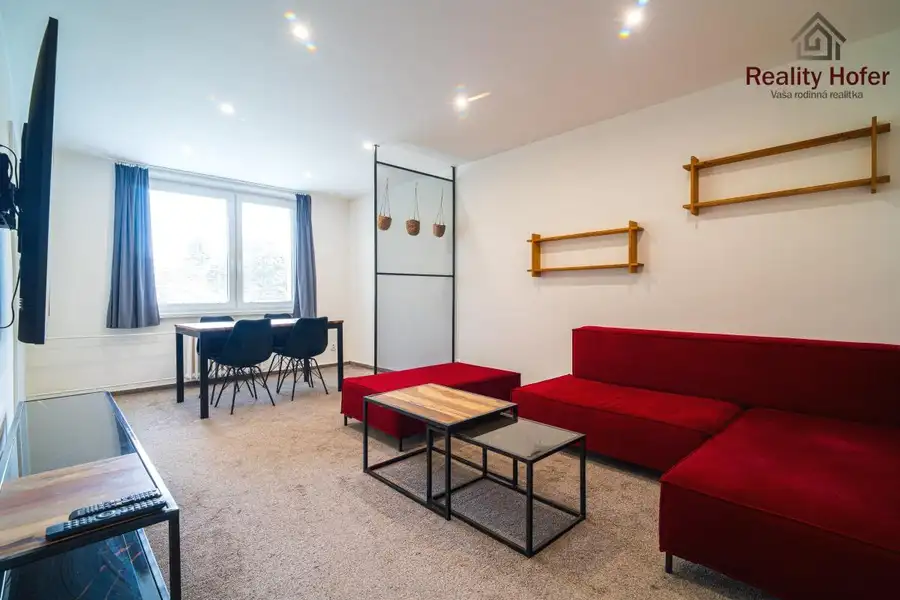
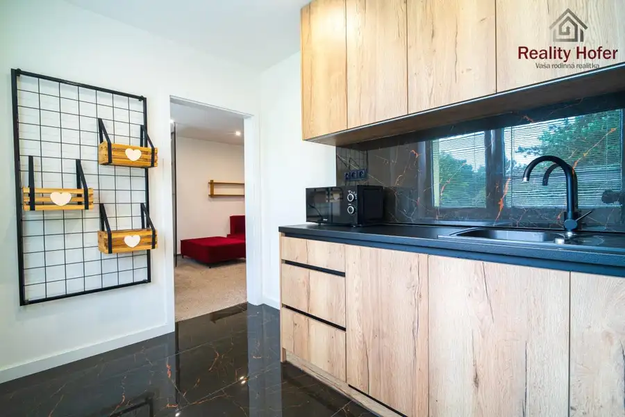
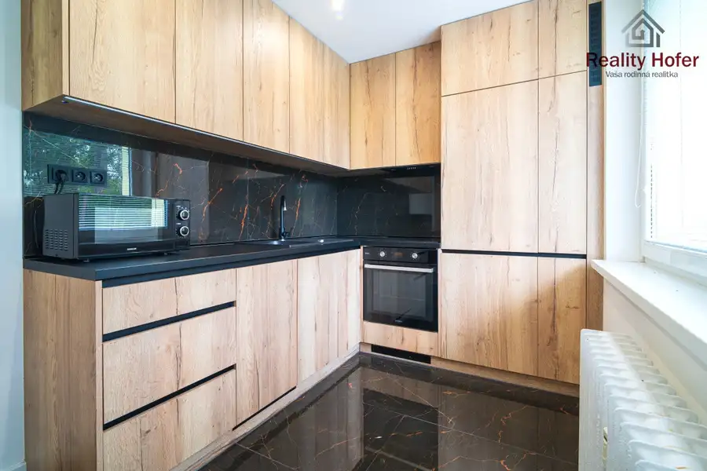
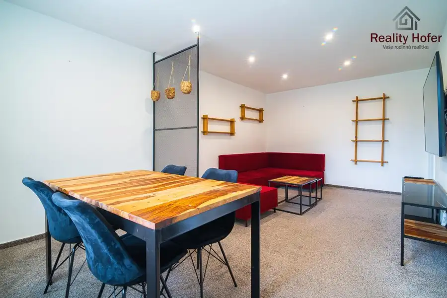
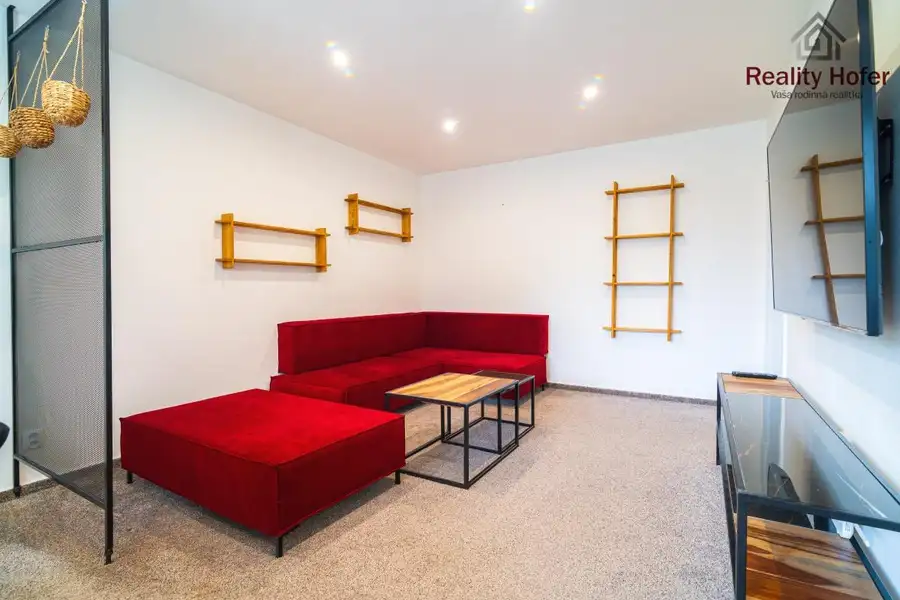
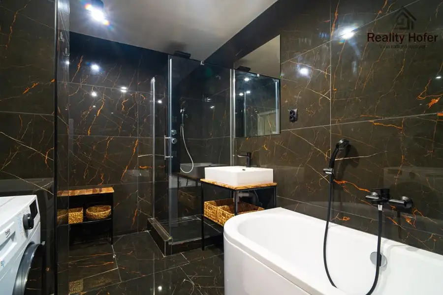
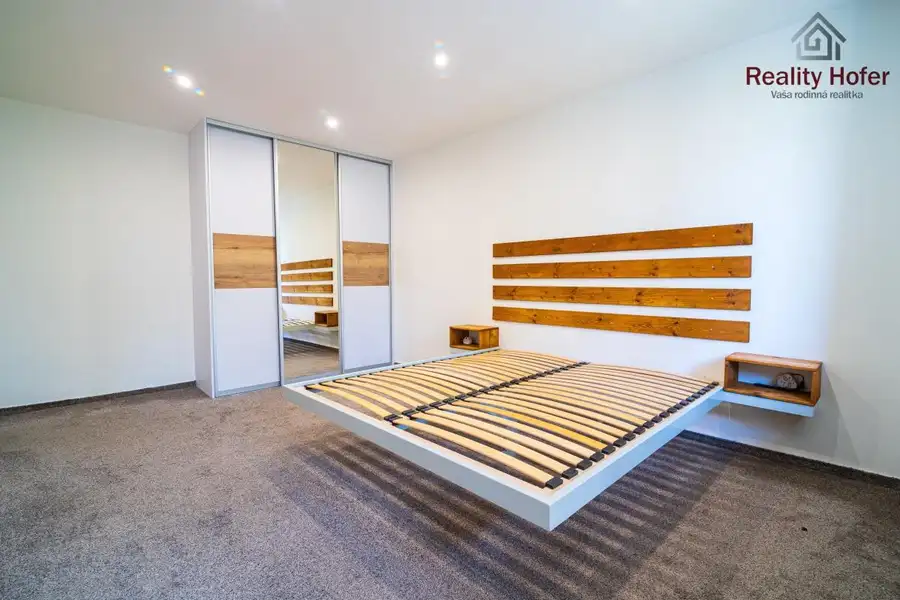
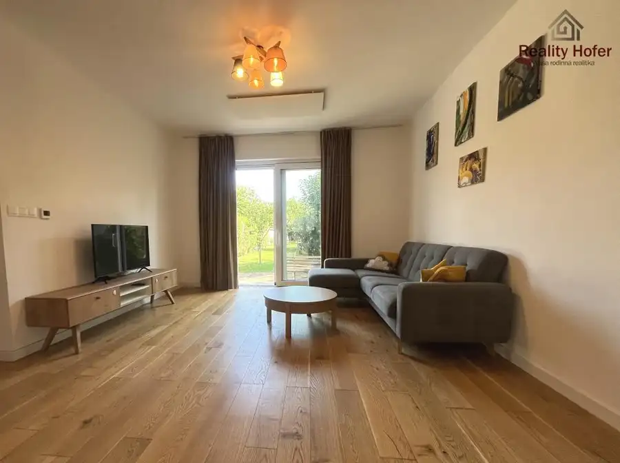
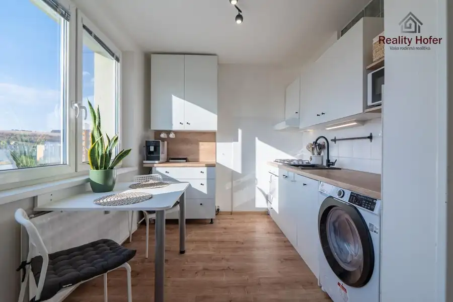
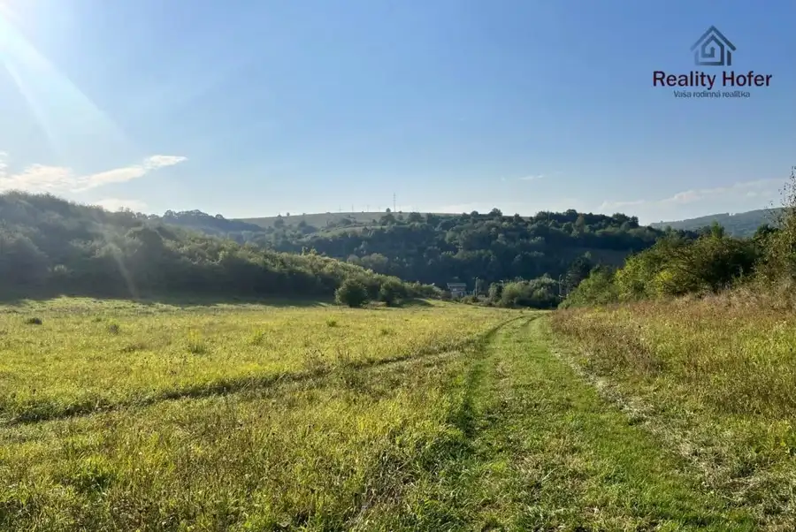

Zariadený 2 izbový byt, 66m2, loggia, ul. V. Clementisa, Prešov
Prešov







- Dispozícia2-izbový
- Plocha66 m²
- Poschodie2. z 8
- StavKompletná rekonštrukcia
- VlastníctvoOsobné
O nehnuteľnosti
*Voľný od 1.11.2026*Reality Hofer ponúka na prenájom štýlovo zariadený 2 izbový byt s loggiou v obľúbenej lokalite Sídliska III na ulici Vlada Clementisa v Prešove. Byt má veľkosť 66m2 a nachádza sa na 2/8 poschodí s výťahom. Bol kompletne zrekonštruovaný.Dispozícia:vstupná chodba, kuchyňa so zabudovanými spotrebičmi - el. varná doska, el. rúra, umývačka, chladnička, digestor, obývačka, spálňa, šatník, kúpeľňa so sprchovacím kútom, vaňou a WC,K dispozícii aj pivnica. Bytový dom bol zateplený a zrekonštruovaný. Parkovanie možné pred bytovým domom.Cena za prenájom: 770,- eur/mesiac vrátane energií, depozit - dvojmesačný nájomPodmienky: nefajčiar, bez zvieratByt sa nachádza v krásnej a zelenej časti, na začiatku Sídliska III, v blízkosti parku A. Dubčeka. Je to moderný park s množstvom zelene, lavičkami, detskými a oddychovými zónami, ideálne pre rodiny s deťmi, seniorov, ale aj aktívnych ľudí. Občianska vybavenosť Sídliska III je výborná. Dostupnosť MHD do 5 minút peši, v blízkosti Kaufland, LIDL, Jednota, ZŠ, MŠ, detské ihriská, zdravotné strediská, lekáreň, pošta, neďaleko poliklinika na Levočskej. Viac informácií a termín obhliadky u nášho makléra na čísle 0917 040 017 alebo mailom na novotny@realityhofer.sk
Parametre
- Cena vrátane energií
- Nie
- Druh
- 2 izbový byt
- Dátum zverejnenia
- 31. 08. 2026
- Energetický certifikát budovy
- nie je
- Podlažie
- 2
- Počet izieb / miestností
- 2
- Počet lodžií
- 1
- Počet nadzemných podlaží
- 8
- Počet pivníc
- 1
- Rok poslednej rekonštrukcie
- 2021
- Stav nehnuteľnosti
- Kompletná rekonštrukcia
- Typ
- Prenájom
- Typ konštrukcie
- Panelová
- Vlastníctvo
- Osobné
- Vybavenie
- Lodžia, Pivnica, Výťah
- Vykurovanie
- Ústredné
- Úžitková plocha
- 66 m²
Kde to je


Mohlo by Vás zaujímať

DomNové 1 150 €Zariadený 4 izbový rodinný dom, Sídlisko II, Gorkého, Prešov Prešov 162 m²
BytNové 119 000 €Sídlisko III - 1 izbový byt, 33m2, Prostějovská, Prešov Prešov 1-izbový33 m²7. podlažie
PozemokNové Cena na vyžádáníInvestičný pozemok, 566m2, Hnevlivá dolina, Prešov Prešov 566 m²